recieve still resolves. It just ranks below receive.
Lexica is an English–Chinese dictionary of 3.4 million entries and a real-time lecture captioner, and both work with the network cable pulled out. Most of those entries are noise from the web corpora they came from, so one rule, not a model, ranks the 3.24 million that no source vouches for below the 162 thousand that at least one does. A typo still resolves, and says it is probably a typo. The captioner writes a lecture down in English with a Chinese gloss under each line, at 3.7× real time, and by default sends nothing anywhere.
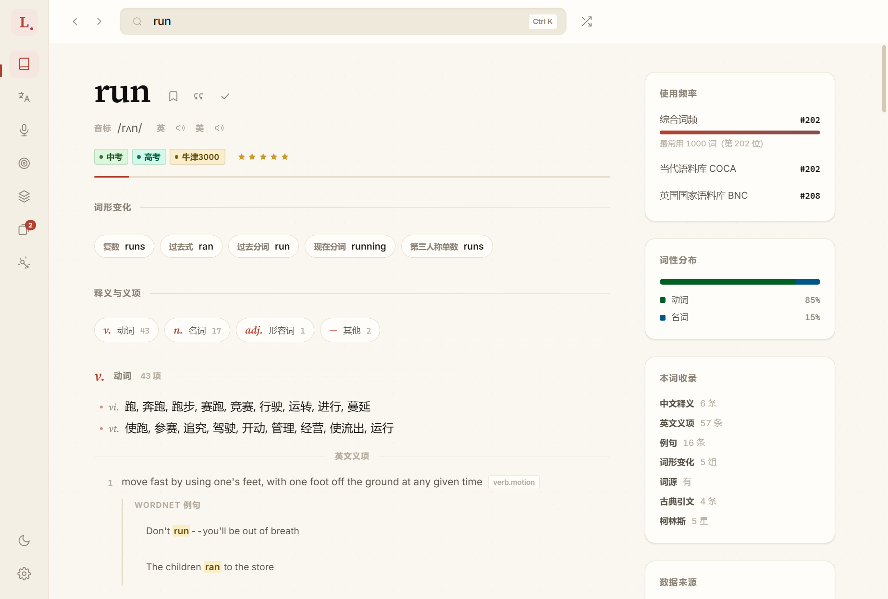
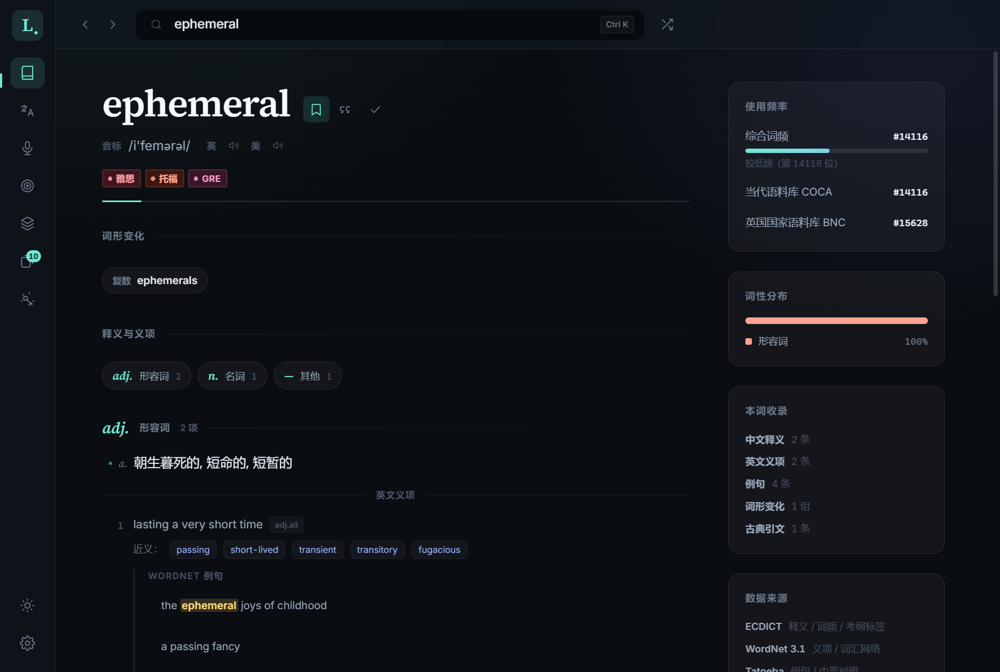
run in the paper theme: senses grouped by part of speech, its inflections,
WordNet glosses with their examples, and on the right its rank in the COCA and BNC frequency lists,
its syllabus tags and what each source contributed.ephemeral in
the glass theme: IELTS, TOEFL and GRE tags, a WordNet gloss with its synonyms and examples, and rank
#14,116 in COCA. The app’s own screenshots; the switch at the top right swaps the theme here too.
Most of a merged dictionary is noise. One rule ranks it down.
Five open sources merge into one SQLite file. ECDICT gives the Chinese senses, phonetics, inflections, frequency ranks and exam tags; WordNet 3.1 the English senses, examples and the synonym network; Tatoeba 214,448 example sentences, 28,909 of them with a Chinese translation; GCIDE, Webster’s 1913, 49,630 etymologies and 34,677 classical quotations; and Chinese Wikipedia’s cross-language titles 918,588 English–Chinese term pairs.
ECDICT was aggregated from the web, and it shows. recieve and wierd are
first-class entries, and so are bare inflections like ran and mice. Searched
naively, a common word comes back under a page of near-duplicates. Four signals say a row is a
real word:
in the COCA or BNC lists.
one to five stars.
中考 through GRE, or the Oxford 3000.
any sense at all.
A row with none of the four is weak. Weak rows are not deleted: exact lookup still finds them and says the word is probably misspelled. Search ranking and the spell-correction pool order on the flag rather than filter on it, so a weak row sits below the vouched-for ones, which is not the same as below every real word: a real word no source rated is weak too.
entries: 1.36 million single words and 2.04 million phrases.
of them weak, which is where recieve and wierd land.
vouched for by at least one source, and ranked first.
one SQLite file, read through Node’s built-in node:sqlite.
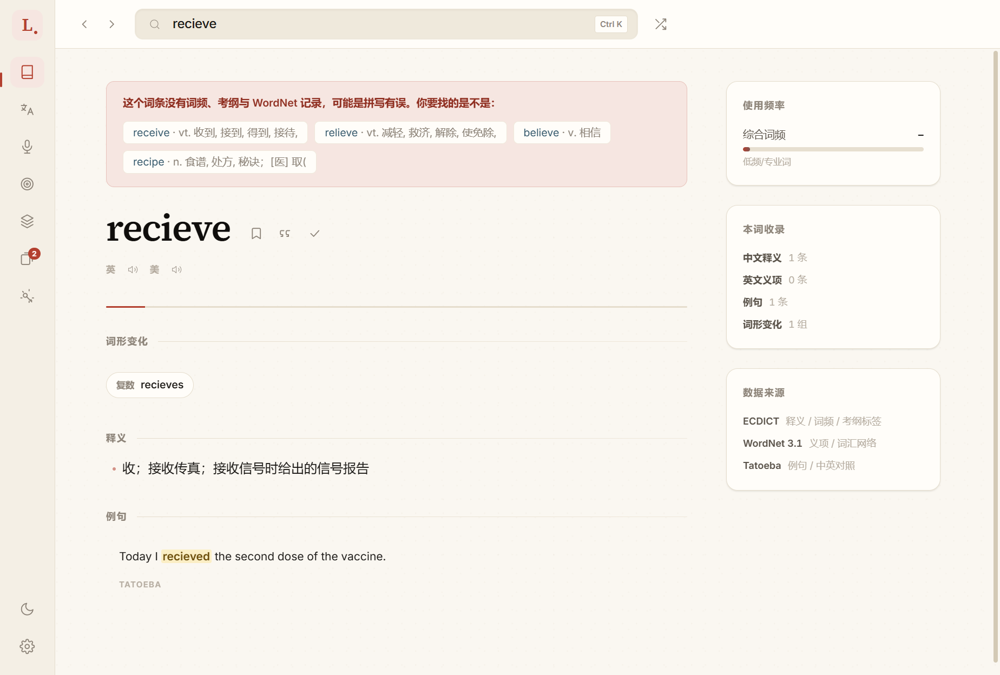
recieve is a real ECDICT row with all four signals absent. It resolves, and says why it is unlikely to be what you meant.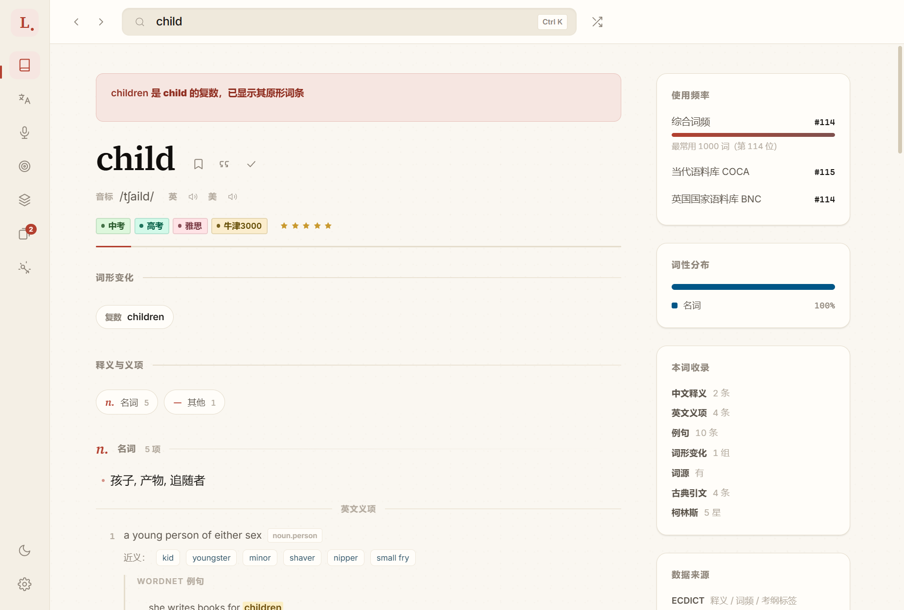
children redirects to child: #114 in the combined list, four syllabus tags, five Collins stars. Same lookup path, the other side of the rule.
Counted from the built database. No native modules: SQLite is Node’s own node:sqlite, not
better-sqlite3, and FTS5, the trigram tokenizer and custom functions all work through it, so the app
installs on a machine with no MSVC build tools, which is why it was chosen.
Most of a caption’s delay is the speaker’s pause.
Live captions for a lecture, from the microphone, from system audio or from a recording, written to
a transcript as they go. The English line is what the system is judged on. The Chinese under it comes
from a local opus-mt model and is a gloss: good enough to follow along, wrong often
enough that the transcript keeps both languages.
Throughput said nothing about how far behind a caption appears, so each stage was timed, over 13 chunks of one clip:
small with beam search
A faster translator cannot fix this. So captions go out twice: a second whisper.cpp
server, a smaller model held to four threads, transcribes the uncut buffer every 1.5 seconds and
shows a provisional line, 212–352 ms a pass, which the accurate pass replaces when the
speaker pauses. Provisional text is never written to the transcript; the self-test checks the
journal’s segment count against the finished count.
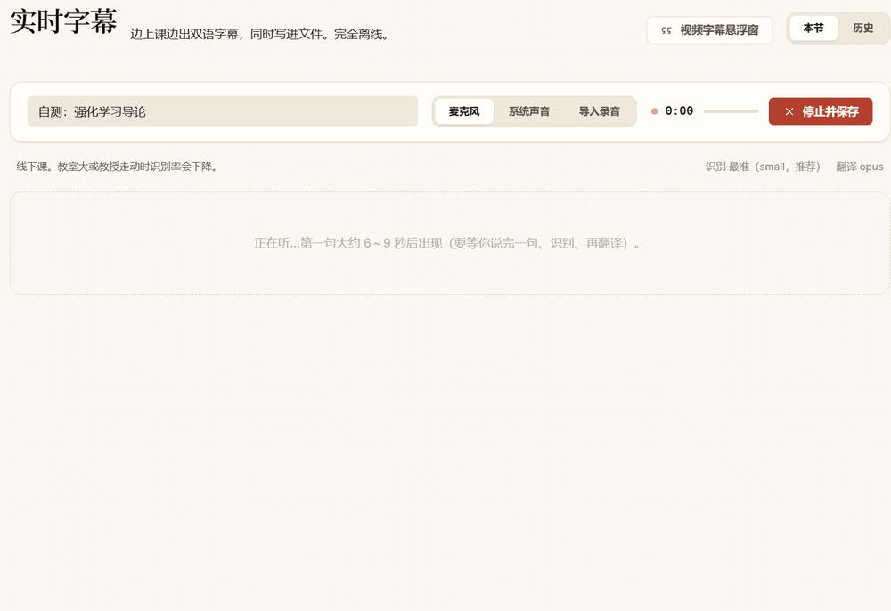
The italic line marked ··· is provisional, Over many episodes it learned., and a few
frames later the accurate pass replaces it with the whole sentence. With eight glossary terms set up
for this lecture the finished lines read 强化学习, 智能体观察了状态, 经验回放缓冲;
the same audio without a glossary came out as 加强学习, 特工观察了国家, 重播缓冲.
Synthetic speech fed at 4× and captured every 450 ms, so this shows the pipeline, not real-time pacing.
A resident whisper.cpp server
ONNX Whisper ran 5-second chunks at 0.58× real time, behind the speaker for good. A warm whisper.cpp process ran them at 1.50×.
The encoder window, bounded
Whisper encodes 30 s even for 5. Shrinking the window took 1.50× to 4.00× with the text unchanged. Too small, and it loops; so it is derived from the chunk limit.
The shipped default
0.8% WER at 3.7×, where base greedy scored 4.7%. Beam search made base worse, 6.3%, so beam is set per model.
Neither number is a benchmark. The speeds are this machine, 5-second chunks; the WER is one 127-word clip synthesized from a lecture script so there is a reference to score against, cleaner than a classroom. Throughput is not latency: 3.7× says audio is processed faster than it arrives. Splitting is on pauses, with a threshold that follows the room’s noise floor, never on a fixed clock that cuts sentences in half. The full table is in the Chinese README.
The failures that read as working.
Almost nothing that went wrong here raised an error. The output still looked like an entry, a caption, a screenshot or a sentence of Chinese. Each of these was found by reading the output.
- 01A common word, under a page of misspellingsECDICT ships
recieveandwierdas entries. The weak flag now ranks them below every vouched-for row, and spell correction draws its candidates only from those. - 02Whisper repeating one sentence forever
--audio-ctx 512covers about 10.5 s. Fed 14 s, the decoder did not drop the tail; it looped, with no error. The window is now computed from the chunk limit. - 03
63.8became638The local translator dropped a decimal point: 从 71.2 降低至 638. That is why there is no translation-only layout: every sentence sits beside its English. - 04A 429 that was not rate limitingElectron’s main-process
fetchgot 429 wherenet.fetchgot 200 for the same URL. The check passed anyway: the fallback model happened to be right. It now asserts which channel answered. - 05反向传播反向传播A glossary rendering occurred twice where the English had the term once, and both were replaced. A rendering that occurs more often than its term is now left alone.
- 06“Q-learning is on-policy”
on-policyandpolicyboth probed as 政策, and pinning a vague 政策性的 onon-policymade a true sentence false. A shared rendering now goes to the most general term. - 07Screenshots one step behind
capturePage()returns the last frame presented, and a covered window stops presenting. Minimized, 7–8 of 12 captures were stale and only 2–5 matched the one before byte for byte. Each capture now waits on two animation frames, or is not saved. - 08The Android copy driftedAndroid held a hand copy of the business layer: its word lists had no drill scope and its export lacked four columns. Both now load
app-core.js, and a test checks its channels against the preload.
One source tree, and what Android leaves out on purpose.
The Android build reuses the desktop renderer verbatim; npm run build:www assembles it
from src/renderer, and a test asserts the shared files are byte-identical,
so the copy cannot drift silently. What differs is bridged, and what would only pretend to work is
left out.
| feature | Windows | Android |
|---|---|---|
| Search, entries, wordbook, notes, lists | yes | yes |
| Drills and level tests | yes | yes |
| Sentence translation, online, opt-in | yes | yes |
| Sentence translation, local modelthe model is ~90 MB, and WASM on a phone is slow | yes | — |
| Glossaryits probing lives in the desktop main process | yes | — |
| Live lecture captionsthe audio stack is left out of the bundle, not stubbed | yes | — |
| Floating quick-lookup window | yes | — |
One business layer
Lookup, wordbook, drills and lists: on IPC channels on the desktop, spread into window.lexica on Android.
A small CommonJS loader
The shared modules are CommonJS, and a WebView is not Node.
node:sqlite, in Kotlin
A shim shaped like node:sqlite over a Kotlin SqlBridge, on a 383 MB slim database.
One named host
connect-src 'none' would have failed silently on a phone while every sandbox test passed. It names the one translation host, and a test ties it to the code.
The bridge detail that cost the most time: SQLiteDatabase.execSQL() refuses any statement that
returns rows, several PRAGMAs do in their assignment form, and the error never mentions PRAGMA.
The note came out of its first launch on a real phone.
A dictionary is mostly ranking.
Lookup, in order
Exact headword, then lemma (running → run), then hyphens and spaces normalized, then spelling: soundex, same-length neighbours and trigrams for candidates, Damerau–Levenshtein to rank them, so recieve is one edit from receive.
Chinese to English
An exact sense segment from 4.41 million, then a prefix, then a substring, ranked by how much of the sense the query covers. Ranked by frequency, ferric buries the answer to 高铁.
Terms someone checked
918,588 pairs from Chinese Wikipedia’s cross-language titles, converted to simplified with OpenCC. Phrases have no frequency rank; an article is what puts gradient descent above gradient gun.
Look up a selection anywhere
A resident PowerShell helper reads the selection through UI Automation, without the clipboard, and falls back to Ctrl+C with the clipboard backed up by value.
A lecture survives a crash
Every line is appended synchronously to journal.jsonl, whatever formats were chosen, and md, txt, srt and json are rebuilt from it.
Drills from the dictionary
14 scopes, from 中考 to GRE and the Collins bands, and 8 question types, computed, not stored. Distractors come from the same scope at a similar frequency, minus the answer’s synonyms.
Every picture is from a real run.
Taken by npm run shot, the app’s own screenshot pass: it walks the interface in both
themes and checks what a picture cannot show, such as whether the page still scrolls and whether
the glossary changed what it should and nothing else.
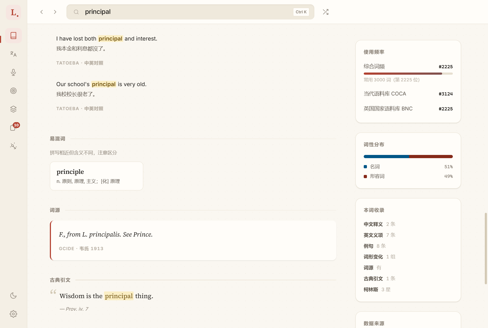
principal: Tatoeba’s bilingual examples, its confusable principle, the etymology from Webster’s 1913, and a quotation from Proverbs.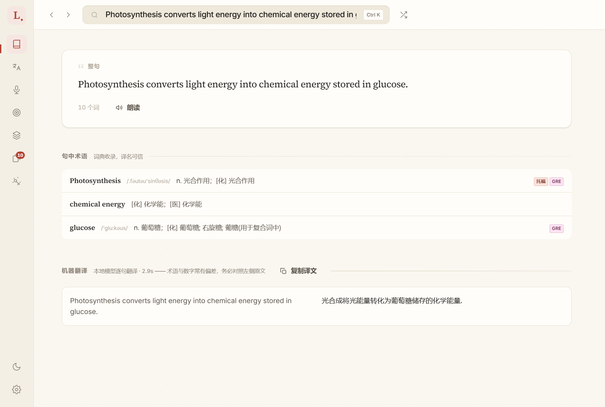
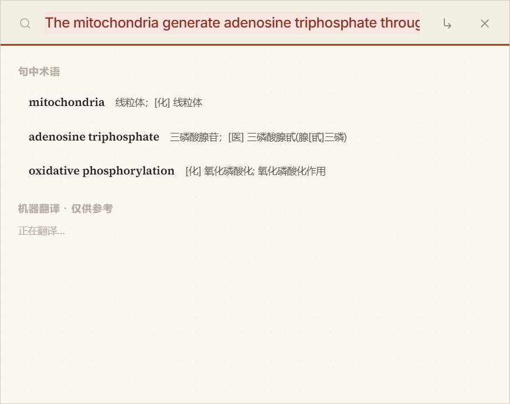
mitochondria, adenosine triphosphate and oxidative phosphorylation picked out of it while the translation is still running.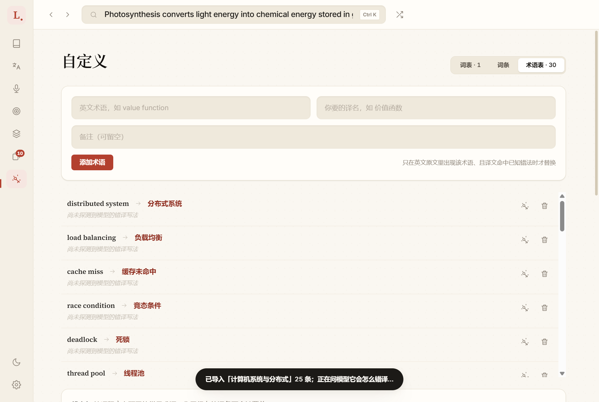
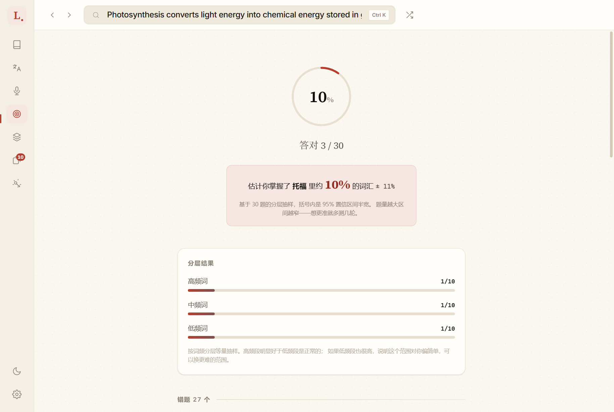
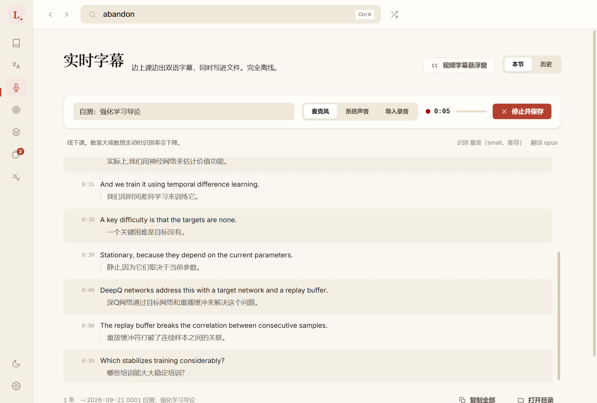
whisper.cpp, the local model’s Chinese under each line. replay buffer came out as 重播缓冲; the English stays.ephemeral, with its tags, synonyms and frequency.Paper, for the light: run, with its inflections, senses and frequency. Both are complete themes, not a filter over one.$ npm run shot [shot] ✓ 滚动容器正常（#stage） [shot] ✓ 翻译页双语对照 2 句 [shot] ✓ 译文里用上了术语表的译名：策略、经验回放缓冲 [shot] ✓ 对照组未被改动 [shot] ✓ 水平检测出结果：答对 3 / 30 · 10% · 3 个分层 … 38 张，退出码 0 $ npm test ℹ tests 270 ℹ pass 270 ℹ fail 0
policy.One download, then no network.
$ npm install $ npm run data # ~800 MB of corpora → data/dict.db $ npm start $ npm test # 270; on a fresh clone, those that # need data/dict.db skip # captions and translation are separate downloads $ npm run fetch:asr # whisper.cpp + base model, ~90 MB $ npm run fetch:model # opus-mt-en-zh, 118 MB
Requirements. Node 22 or later, for node:sqlite, and Windows for the desktop app. No build tools.
From China. The download script tries gh-proxy.com and ghfast.top before GitHub, then checks three slices of each mirrored file against GitHub byte for byte.
A portable build. npm run pack gives dist/Lexica-win-x64/, no installer.
Android. npm run build:db:mobile for the 383 MB slim database, then npm run apk.